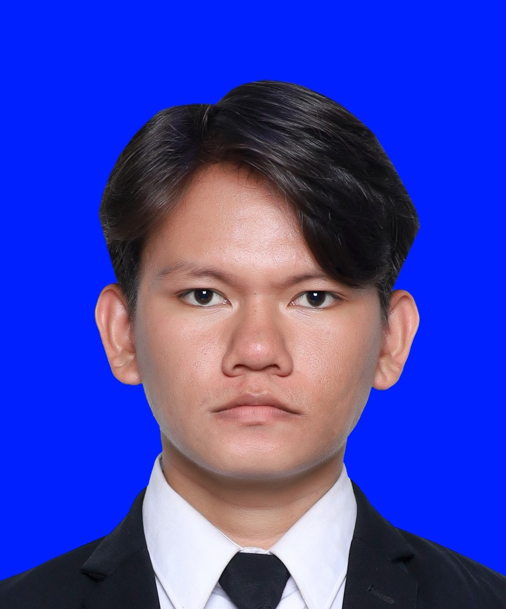
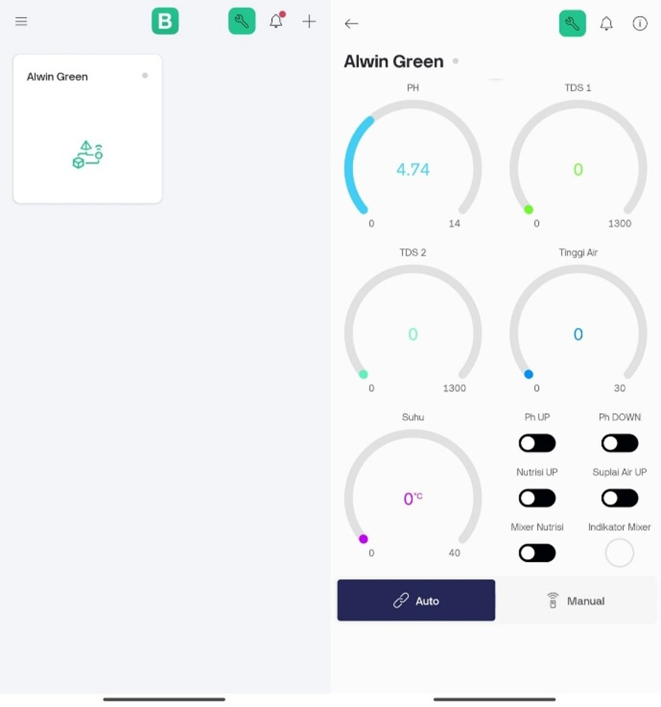

Electrical & Maintenance
Inspeksi komponen, wiring, sensor, aktuator, sistem kontrol, dan troubleshooting bersama tim engineering.
Lulusan D4 Teknik Elektronika dengan pengalaman magang pada engineering maintenance, integrasi panel kontrol, troubleshooting peralatan produksi, serta pemeliharaan jaringan. Berfokus pada kelistrikan, sistem kontrol, dan otomasi industri.

Diploma IV Teknik Elektronika, Politeknik Manufaktur Negeri Bangka Belitung · IPK 3,75/4,00.
Inspeksi komponen, wiring, sensor, aktuator, sistem kontrol, dan troubleshooting bersama tim engineering.
Perakitan panel kontrol, integrasi PLC/HMI, pemrograman PLC pada sebagian peralatan, dan pengujian sistem kontrol.
Troubleshooting Wi-Fi pelanggan, pemeliharaan ODP, dan infrastruktur jaringan serat optik.
SysmacCX-ProgrammerAutoCADVS CodeAndroid StudioArduinoESP32
Engineering Intern — Process Engineering, Assy Engine Division (PEAED) · Maret–Juli 2026 · Plant 6, Deltamas, Jawa Barat
Target awal penyelesaian adalah 5 bulan; pekerjaan selesai dua bulan lebih cepat dari target tersebut.
Memodifikasi mekanisme pengunci water-pump torque jig. Berdasarkan pengamatan saat penggunaan setelah modifikasi, tidak terjadi slip benda kerja selama proses pengencangan.
Melakukan inspeksi komponen dan pengujian teknis pada wiring, sensor, aktuator, dan sistem kontrol bersama tim engineering untuk membantu identifikasi akar penyebab gangguan.
Diagram alur ini dibuat untuk menjelaskan pengalaman berdasarkan uraian pemilik portofolio. Bukan diagram resmi atau dokumentasi asli AHM. Tidak ada gambar internal pabrik yang digunakan.
Engineering Intern — Maintenance & Troubleshooting · Agustus 2024–Januari 2025 · Bangka
Pemeliharaan dan troubleshooting jaringan Wi-Fi pelanggan, pemeriksaan perangkat, serta penanganan gangguan konektivitas.
Pemeliharaan Optical Distribution Point (ODP) dan jaringan serat optik.
Melalui diskusi dan kesepakatan tim, pekerjaan dibagi ke dua tim paralel; setiap tim biasanya menangani dua pekerjaan dalam satu perjalanan.
Pembagian tim merupakan kesepakatan bersama, bukan inisiatif pribadi. Tidak ada klaim persentase penghematan waktu karena tidak tersedia pengukuran kuantitatif.
Sistem Kontrol dan Monitoring Hidroponik Berbasis IoT Menggunakan Fuzzy Logic Control (FLC) · Proyek akhir, Polman Babel · selesai Juli 2025 · dikerjakan bersama Lidwina Sekliadinda.
Galeri ini berisi dokumentasi aplikasi monitoring, membership function Fuzzy Logic, rancangan wiring, dan panel fisik. Program Arduino dan ESP32 akan ditambahkan pada pembaruan berikutnya.



Memantau pH, TDS, suhu air, dan ketinggian air serta mengontrol pH, nutrisi, dan suplai air pada tandon hidroponik.
Arduino Uno R3, ESP32, sensor pH/TDS/suhu/ultrasonik, Blynk. Fuzzy Logic Control diterapkan pada pengendalian pH; TDS dan suplai air menggunakan logika sederhana.
Angka di atas mengikuti abstrak laporan dan menggambarkan error akhir terhadap setpoint, bukan akurasi sensor. Waktu 12,83 menit disebut sebagai waktu eksekusi sistem; perbandingan persentase dengan metode konvensional perlu dirujuk ke metode pengujian dalam laporan.
Sumber: Repository laporan tugas akhir · Publikasi jurnal (DOI)
Dokumen pendukung pengalaman kerja, kompetensi, dan kemampuan bahasa. Klik tombol untuk membuka dokumen PDF.
Pengalaman magang di bidang jaringan serat optik, 19 Agustus 2024–19 Januari 2025.
Lihat sertifikat PDFEngineering Division, 2 Maret–31 Juli 2026.
Lihat surat PDFSertifikat kompetensi kerja bidang jasa konstruksi, kualifikasi Supervisor K3 Konstruksi Level 6.
Lihat sertifikat PDFTotal score 570 · Listening 330 · Reading 240. Salinan publik menyamarkan nomor identifikasi dan tanggal lahir.
Lihat laporan TOEIC PDFDokumen ini dipublikasikan sebagai bukti pendukung portofolio. Sebelum membagikan tautan, pastikan kamu nyaman menampilkan informasi yang masih terlihat pada dokumen. Salinan TOEIC yang ditautkan di sini telah disamarkan pada bagian nomor identifikasi dan tanggal lahir.
Alvin Yeheskiel Roison Harahap
Bangka, Kepulauan Bangka Belitung
alvinyrh3@gmail.com
+62 851 8053 8635
Bahasa: Indonesia (bahasa ibu), Inggris (tingkat menengah).